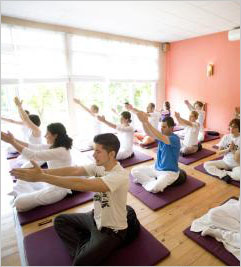

¿Sabes qué es el Yoga?
Con el Yoga, desarrollamos inmunidad contra algunos de los peores males del mundo moderno: el sedentarismo, el estrés, la cólera y la depresión (y la falta de felicidad). Estos causan la mayoría de las enfermedades y muertes en la actualidad. Además, mejora prácticamente todos los sistemas corporales, incrementa el ánimo y la vitalidad y nos permite reencontrarnos con nosotros mismos.
El Yoga es una disciplina muy antigua. Sus orígenes se remontan, por lo menos, a unos 5,000 años. Hasta hace relativamente poco, era algo reservado para un selecto grupo de personas de la India (generalmente vinculados a la nobleza y al clero), siendo desconocido para occidente. La presencia de occidentales en dicho país (sobre todo después de establecido el dominio británico), primero, y el viaje de yoguis nativos a occidente, luego, fueron generando, poco a poco, su extensión internacional. Actualmente, tiene millones de seguidores y practicantes en todo el planeta.
Utiliza técnicas que trabajan a nivel físico, mental y energético, las que producen cambios significativos en estos aspectos así como en lo emocional y espiritual para los que lo practican con regularidad.
Los beneficios del yoga se originan debido a:
 Su capacidad de ejercitar prácticamente todo el cuerpo, dando movilidad al sistema músculo – esquelético, mejorando la flexibilidad y facilitando una mejor nutrición de sus tejidos.
Su capacidad de ejercitar prácticamente todo el cuerpo, dando movilidad al sistema músculo – esquelético, mejorando la flexibilidad y facilitando una mejor nutrición de sus tejidos.
 El mejor manejo de la respiración, con sus efectos positivos en la oxigenación, en la limpieza de la sangre y en la ampliación de la capacidad pulmonar.
El mejor manejo de la respiración, con sus efectos positivos en la oxigenación, en la limpieza de la sangre y en la ampliación de la capacidad pulmonar.
 El dominio de técnicas de relajación, que permiten que el cuerpo se "sane a si mismo" y disminuya el estrés.
El dominio de técnicas de relajación, que permiten que el cuerpo se "sane a si mismo" y disminuya el estrés.
 La estimulación de los circuitos energéticos que influencian positivamente sobre la totalidad de las personas.
La estimulación de los circuitos energéticos que influencian positivamente sobre la totalidad de las personas.
 El control progresivo de la tendencia de la mente a vivir por fuera del aquí y ahora y refugiarse en "rumiar" el pasado y anticipar amenazas del futuro, en medio de su incesante y estresante parloteo.
El control progresivo de la tendencia de la mente a vivir por fuera del aquí y ahora y refugiarse en "rumiar" el pasado y anticipar amenazas del futuro, en medio de su incesante y estresante parloteo.
Kundalini Yoga
Kundalini Yoga es denominado el "Yoga de la Consciencia". Fue traído a Occidente por Yogui Bhajan en los años 60 del siglo pasado. A partir de entonces, su crecimiento en todo el mundo ha sido notable y ha contribuido a llenar un vacío creciente en una sociedad centrada en las cosas externas pero carente de armonía interior.
 Combina distintos elementos como: posturas, movimientos, respiración, relajación, concentración y meditación; con el objetivo de despertar y elevar la energía Kundalini, que es una energía que todos tenemos, pero que se encuentra normalmente dormida. También, estimula los sistemas nervioso y glandular, sistemas rectores de nuestro organismo, haciéndolos funcionar mejor y estimulándolos, lo que va a repercutir en el funcionamiento general de quienes lo practican.
Combina distintos elementos como: posturas, movimientos, respiración, relajación, concentración y meditación; con el objetivo de despertar y elevar la energía Kundalini, que es una energía que todos tenemos, pero que se encuentra normalmente dormida. También, estimula los sistemas nervioso y glandular, sistemas rectores de nuestro organismo, haciéndolos funcionar mejor y estimulándolos, lo que va a repercutir en el funcionamiento general de quienes lo practican.
Se adapta a todo tipo de persona y produce resultados importantes, benéficos y crecientes, que van a mejorar nuestra salud, darnos una sensación estable de bienestar, reducir significativamente el estrés e ir generando nuevas perspectivas para nuestras vidas.
VITAL YOGA tiene el objetivo de difundir esta disciplina milenaria entre las personas, grupos y organizaciones de todo tipo para demostrar, en la práctica, su significado e importancia para conseguir una vida mejor y más plena.
Contacto: Presione aquí


VITAL YOGA ofrece, además de sus actividades públicas, programas especiales para grupos, empresas y otras organizaciones. Estos serán diseñados en forma personalizada, de acuerdo a las necesidades de los interesados.